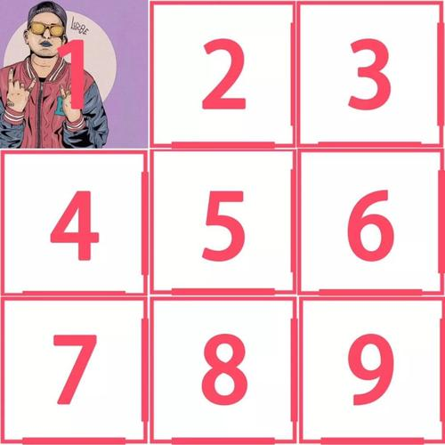

# compito1.github.io
<html lang="en">    <!-- 文档中html部分的开始 lang=language en=english -->
    <!-- 整行注释是Ctrl + / -->
<head> <!--提供有关文档的相关信息-->
    <meta charset="UTF8">  <!--源文件的编码方式，选择UTF8-->
    <title>石月乔的日常便秘</title>  <!--打开网页时候的标题-->
</head>
<body>
<h1>最近石月乔又便秘了</h1> <!--h1是字体加粗加大--><br />
今天是石月乔不拉屎的第一天<br />
<a href="https://jingyan.baidu.com/article/02027811d04dc61bcd9ce56a.html" target="blank">石月乔开始查怎么治疗了</a> <br />
    <!--a是超链接，herf加入链接地址。target blank超链接到新页面，self超链接到本界面。不设定target默认为self效果。-->
<s>石月乔今天拉粑粑啦</s>  <!--s是加横线划掉，感觉这个没什么用，呵呵呵--><br />
石月乔不拉屎的第二天，开始制定了新的食谱。<br /><!--<br />是换行，写在结尾。-->
<table border="1px"> <!--制作表格,border边框的粗细，单位为像素。-->
    <thead>
    <tr>  
        <th></th>
        <th>食物1</th>
        <th>食物2</th>
    </tr>
    </thead>
    <tbody>
    <tr>  <!--制作一行-->
        <th>早晨</th><!--td为一行内的一格，th为td的字体加粗并居中。-->
        <td><a href="https://home.meishichina.com/recipe-38609.html" target="blank">首钢医院前面的鸡蛋灌饼</a></td>
        <td>新西兰大奶牛的奶挤出来的牛奶</td>
    </tr>
    <tr>  
        <th>中午</th>
        <td>青脆爽口的秘制大拌菜</td>
        <td>老太太才喝的燕麦粥</td>
    </tr>
    <tr>  
        <th>晚上</th>
        <td>中午剩的大拌菜</td>
        <td>天上天下天地无双火龙果</td>
    </tr>
    </tbody>
    <tfoot>
        <tr>  
            <th>计划是否完成</th>
            <td colspan="2"></td> <!--colspan为合并横向单元格，rowspan是合并竖向单元格。--> 
        </tr>       
    </tfoot>
</table>
</body>
<body>
<ol reversed> <!--创建有序列表,reversed降序排列-->
    <li>蹲厕所了没有拉出来</li><!--列表中的项目-->
    <li>高得鑫给曹璟睿发了微信</li>
    <li>发现曹璟睿也在便秘</li>
    <li>最近便秘的人真多啊</li>
</ol>
<ol type="A"> <!--type更改开头数字的种类-->
    <li>蹲厕所了没有拉出来</li><!--列表中的项目-->
    <li>高得鑫给曹璟睿发了微信</li>
    <li>发现曹璟睿也在便秘</li>
    <li>最近便秘的人真多啊</li>
</ol>
<ui> <!--创建无序列表-->
    <li>蹲厕所了没有拉出来</li><!--列表中的项目-->
    <li>高得鑫给曹璟睿发了微信</li>
    <li>发现曹璟睿也在便秘</li>
    <li>最近便秘的人真多啊</li>
</ui>
<form> <!--创建表单-->
    <input type="text"><!--增加文本框，默认为text-->
    <input type="text" value="石月乔的饲养指南"><!--增加属性，value为文本框的占位，占位需要手动删除--><br>
    <input type="text" placeholder="请输入用户名"><!--不占位显示为灰色，且自动删除--><br>
    <input type="text" placeholder="请再次输入用户名" maxlength="10"><br><!--maxlength为文本框最大输入字符-->
    <input type="text" placeholder="你在唱什么，原来你是我的猪大哥！" size="50"><!--size为拓宽文本框长度-->
    <input type="text" value="小朋友，你是否有很多问号？" readonly><!--readonly只读不能删除--><br>
    <input type="password" placeholder="请输入密码"><!--隐藏打出来的字-->

    <textarea rows="5" cols="30">我一路向北,离开有你的季节,你说你好累,已无法再爱上谁,风在山路吹,过往的画面,全都是我不对,细数惭愧我伤你几回。
        雨下整夜，我的爱溢出就像雨水。窗台蝴蝶，像诗里纷飞的美丽章节。我接着写，把永远爱你写进诗的结尾。你是我唯一想要的了解。</textarea>
</form>
<form>
    <input type="button" value="请点击确认"><!--制作按钮-->
    <button>请点击确认</button><!--制作按钮，和Javascript合作作为绑定事件-->
    <input type="submit" value="小鸡鸡"><!--提交表单-->
</form>
<form>
    <input type="range" min="-100" max="100" step="10" value="-100"><!--制作滑动条条-->
    <input type="number"><!--制作上下调节数字的文本框 也可以设置min max step等元素。--><br>
    <input type="checkbox">大家便秘的第二天<!--可以打钩并且取消打钩的小方块--><br>
    最近谁的便秘最严重的？<br>
    <input type="radio" name="a">石月乔<!--可以打钩但不能取消打钩的小圆圈-->
    <input type="radio" name="a">曹璟睿<!--name全部为一个，可以进行多选1-->
    <input type="radio" name="a" checked>高得鑫 <!--checked默认为首选这个-->
    <br>
    你便秘大约多久了？
    <select><!--添加下拉菜单选择-->
        <option>1天</option>
        <option>1个月</option>
        <option>1年</option>
        <option>以上都不是</option>
    </select>
    你便秘的具体持续时间是？
    <input type="text" list="anni" size="3"><!--list为寻找datalist的id-->
    <datalist id="anni"><!--配合文本框可以既有选项又可自己打字，必须写id与text的list配合。-->
        <option>0</option>
        <option>1</option>
        <option>2</option>
        <option>3</option>
        <option>4</option>
    </datalist>年 
    <input type="text" list="mesi" size="3">
    <datalist id="mesi">
        <option>0</option><option>1</option><option>2</option><option>3</option><option>4</option><option>5</option><option>6</option><option>7</option><option>8</option><option>9</option>
        <option>10</option><option>11</option><option>12</option>
    </datalist>月
    <input type="text" size="3">日

</form><br>
<form>
    <input type="email">
    <input type="tel">
    <input type="url">
    <input type="date" size="40"><!--设置选择时间的文本框-->
    <input type="color"><!--设置颜色的按钮--><br>
</form>
<a href="https://baike.baidu.com/item/%E6%96%B0%E4%B8%96%E7%BA%AA%E7%A6%8F%E9%9F%B3%E6%88%98%E5%A3%AB/55458?fr=aladdin" target="blank"><input type="image" src="image/1494257083623.jpg" width="1500px"></a>
<!--img插入图片 src插入图片地址 width图片宽度 height图片高度 图片也可以加超链接-->
<form>
<input type="image" src="jiugongge.jpg" usemap="#map1">

<!--创建分区响应图↓-->
<!--使用usemap和map进行绑定，usemap使用#加名字，map使用name=加名字。-->
<map name="map1">
    <area href="https://baike.baidu.com/item/%E5%85%AB%E7%A5%9E%E5%A4%AA%E4%B8%80/12012252?fr=aladdin" shape="rect" coords="1,1,166,166" target="blank">
    <!--area是超链接区域，shape选择区域形状，rect为矩形，coords为位置，顺序为左上右下。  circle为圆形，coords为左边缘到圆心的距离，右边缘到圆心的距离，圆的半径。-->
    <area href="https://baike.baidu.com/item/%E4%BA%9A%E5%8F%A4%E5%85%BD/7602336?fr=aladdin" shape="rect" coords="166,1,332,166" target="blank">
</map>
</form>
<video src="matrix evolution.mp4" height="500px" controls></video><!--autoplay为视频自动播放 controls有进度条等属性--><br>
<a style="font-size: 50px;color: #ffad2a;">石月乔的便秘治好了！！！！</a><!--元素内嵌样式表，font-size控制字体-->
</body><br>
<head><!--文档内嵌样式表的格式，在head里完成-->
    <meta charset="UTF-8">
    <title>文档内嵌样式表</title>
    <style type="text/css">
         a {
             font-size: 80px;color: darkblue;
         }
    </style>
    <link rel="stylesheet" type="text/css" href=""><!--外部样式表格式，herf加外部样式表的链接。-->
</head>
<body>
    <a>石月乔的便秘治好了！！！！</a>
</body>
</html>
